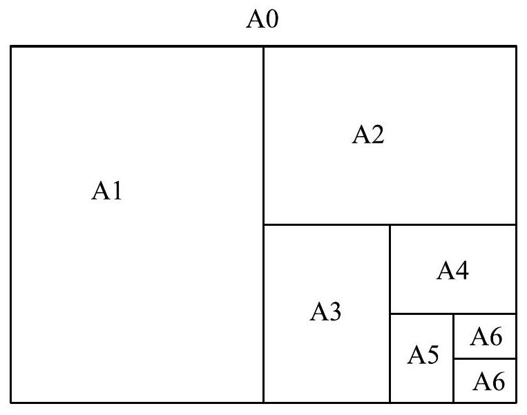
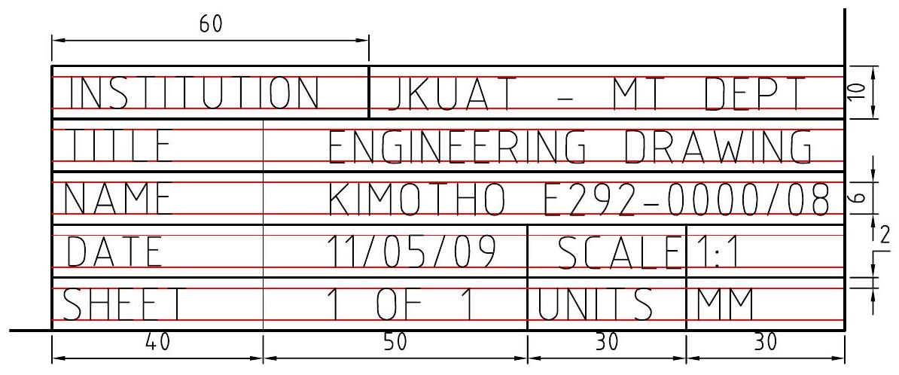

Chapter 1
Introduction
1.1 Graphics Language
Graphics are visual presentations on some surface such as a wall, paper, canvas, computer screen, etc, to inform (communicate) or to entertain. Examples of graphics are:
- pictures
- photographs
- visual art
- diagrams
- engineering drawings, etc
The graphic language is the idea of communicating thoughts from one person to another by means of graphics. The role of the graphics language is:
- To communicate ideas
- To communicate feelings
- To convey information
Written language is essential for discussing concepts, meanings or feelings, the things that do not have form, whereas things that have form are better explained or captured with the graphic language. Just as a person must be literate in order to to understand the written language, visual literacy is also important in order to understand information in graphic form.
Communication by use of graphics has developed along two distinct paths:
- Artistic drawing
- Technical drawing
1.1.1 Artistic Drawing
Artistic drawings are used to express aesthetic, philosophic or other abstract ideas. They can also be used to portray decorative aspects, to express joy, sorrow, political or religious beliefs. It can be carried out on almost any surface and allows many interpretations. Common tools for artistic drawing are:
- graphite pencils
- inked brushes
- crayons
- charcoal
- markers
- waxed colored pencils, etc.
1.1.2 Introduction to Technical Drawing
Technical drawing (drafting) is the practice of creating accurate descriptions and representations of existing or imagined physical objects for technical, architectural and engineering needs. They are used in development of ideas for designs and to convey technical information. Aspects of a technical drawing include:
- shape
- size
- material
- assembly
- finish
Essential requirements for a technical drawing include:
- Clear and unambiguous
- Language independent
- accurate
- Conform to standards
- suitable for duplication
There are three types of technical drawings:
- Multi-view drawings (orthographic); one or more views (projections) systematically arranged.
- Pictorial; one view drawn in 3D at a specified angle as it would appear in real life.
- Schematic (diagrammatic); simplified functional drawing.
Drawing conventions (drawing grammar) allow people to communicate more effectively and with clarity. These conventions are set by various standards organizations such as:
- ISO International Organization for Standardization
- ISO 128: Technical Drawings - General principles of presentation.
- ISO 129: Technical Drawings - Dimensioning
- ISO 3098/1: Technical Drawings - Lettering
- ISO 8048: Technical Drawings - Construction Drawings - Representation of views, sections, cuts.
- KEBS Kenya Bureau of Standards
- KS 06-325. Year 1986. Title: Engineering drawing practice. scope: Specifies the general principles of presentation and practice to be applied to engineering drawings. Subject: Engineering drawings
- KS 06-1334 Year 1996. Title: Specification for engineer's squares.
- ANSI American National Standards Institute
- BS British Standards
These standards ensure quality, safety and interchangeability of products and information. Standards are updated periodically rendering the old ones obsolete.
Technical drawing is referred to as the universal language for Engineering since it can be interpreted in any part of the world.
1.1.3 Drawing Equipment
List of equipment for technical drawing
- Drawing board or drafting table $(508 \times 610)$
- T-square
- Set of instruments (draughtsman set)
- Triangle $45^{\circ}-45^{\circ}-90^{\circ}$ or adjustable sets square.
- Triangle $60^{\circ}-60^{\circ}-90^{\circ}$
- Protractor
- Pencils HB, H, 2H, 4 H
- Eraser (Staedtler)
- Drafting tape (masking tape)
- Drawing paper (A2)
Optional equipment:
- Erasing shield
- Irregular curve (French curve)
- Lettering guide
- Ellipse template
- Flexible curve
Objectives that students should strive to obtain:
- Accuracy - should convey the correct information
- Speed - for productivity
- Legibility - (clear and legible for communication)
- Neatness
- Use only one side of the drawing paper.
1.2 Paper sizes, lettering and line types
1.2.1 Paper Sizes
In this course, we will adopt the ISO A standard drawing sheet sizes and inside borders. The ISO A0 size is defined as having an area of one square meter $(1 \mathrm{~m}^{2})$. The sides are in proportions of $1: \sqrt{2}$. Each smaller sheet size is exactly half the area of the previous size, for instance,
- an A0 sheet cut in half gives two A1 sheets
- an A1 sheet in half you get two A2 sheets
Figure 1.1 shows ISO A paper size series. Table 1.1 shows dimensions of ISO A series drawing sheet sizes, while figure 1.2 clarifies the terms used in table 1.1. The most commonly used smallest format is A4.
Figure 1.1: ISO A Drawing paper sizes
Series designation |
Trimmed size (mm) |
Inside border (mm) |
||
|---|---|---|---|---|
| Y | X | V | U | |
| A0 | 841 | 1189 | 821 | 1159 |
| A1 | 594 | 841 | 574 | 811 |
| A2 | 420 | 594 | 400 | 564 |
| A3 | 297 | 420 | 267 | 390 |
| A4 | 210 | 297 | 190 | 267 |
Figure 1.2: Drawing borders
1.2.2 Drawing layout
The Inside border encloses the working area, including the title block and other tables. The border shall be 20 mm wide on the binding edge and 10 mm wide on the other three sides, with resulting working area sizes as shown in Tables 1 and 2. The border on the binding edge allows for binding or hole punching for filing purposes. The drawing layouts can be in two formats:
- portrait, the longer edge is vertical
- landscape, the longer edge is horizontal
1.2.3 Title Block
A title block is a system of labeling and cross-referencing drawings so that the may be stored and when required, identified and located easily and efficiently. Title blocks are used to record all the important information necessary for the working drawings. It contains general as well as specific information. The basic requirements for a title block located at the bottom right hand corner of a drawing are:
- Title of the drawing
- Drafters name and number
- Name of firm or organization
- Scale
- Date
- Dimensions (units of measurements) used
- Drawing number or projection symbol
Figure 1.3 shows a sample title block
Figure 1.3: Sample title block
1.2.4 Lettering
Lettering is used to give dimensions and other pertinent information of what is being drawn. ANSI recommends that Single Stroke Gothic style be the accepted lettering standard due to the following reasons:
- Most plain lettering style
- Written rapidly
- Highly legible
Single stroke lettering has all the strokes of uniform thickness, and each stroke is produced by one movement of the pencil. Figure 1.4 shows sample lettering using Gothic style. Guidelines for
| ABCDEFGHIJKLMNOPQRSTUVWXYZ |
| äbcdefghijkkmnopqrstuvwxyz |
| JAMES KURIA KIMOTHO JAMES KURIA KIMOTHO |
| James Kuria Kimotho James Kuria Kimotho |
| 1234567890 |
Figure 1.4: Lettering using Gothic style
lettering in technical drawing:
- Use H or HB pencils when lettering
- Pencils should be sharpened to a conical point
- Good lettering requires the use of guidelines drawn using construction lines ( 4 H pencil)
- Characters should have the simplest form possible
- Letter spacing - use uniform area between letters and not uniform spacing
- Word and sentence spacing - should be equivalent to the letter height
- Letter height
- 6 mm for upper case letters
- 4 mm for lower case letters
- For dimensions and notes, a character height of 3 mm should be used.
- Spacing between lines of letters should be at least $\frac{2}{3}$ the letter height
- Lettering guides can be used (AMES lettering guide)
- fraction : $\frac{4}{5}$ not $4 / 5$
1.2.5 Line Types
Thin line lines that are dark, and drawn with 2 H pencil include: centerlines, extension lines, dimension lines, leader lines, section lines, hidden lines.
Thick lines that are dark and drawn with a HB pencil include; outlines, visible lines.
Very thick lines that are dark and drawn with a B pencil include: cutting plane lines, viewing plane lines.
Thin Light lines drawn with a 4 H pencil include: Guidelines used for lettering, construction lines Dark features drawn with a HB pencil include: arrowheads, lettering
| Name | convention | Description and Application | Example |
| CENTER LINES |  |
Thin dark lines made up of long and short dashes alternately spaced. Used to indicate symmetry about an axis and location of centres - 2H pencil |  |
| VISIBLE LINES |  |
Thick dark continuous line Used to indicate visible edges of an object - HB pencil |  |
| HIDDEN LINES |  |
Thin dark lines made up of short evenly spaced dashes Used to indicate conceled edges of an object - 2 H pencil |  |
| EXTENSION LINES |  |
Thin dark continuous lines used to indicate extent of dimensions- 2 H pencil | extension line |
| LEADER LINES |  |
used to indicate a part, dimension or other reference |  |
| CONSTRUCTION LINES |  |
Thin light continuous lines. Should not be visible at arms length Used when constructing a drawing. - 4H pencil | construction lines |
| CUTTING PLANE LINES |  |
used to indicate where an imaginary cutting took place - B pencil |  |
| SECTION LINES |  |
Thin dark continuous lines Used to indicate the surface in the section view imagined to have been cut along the cutting plane line - 2H pencil |  |
Figure 1.5: Types of lines